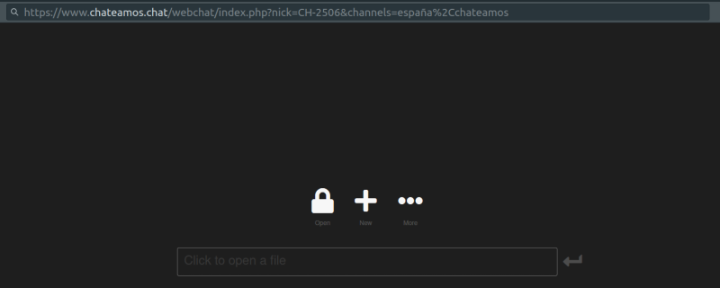
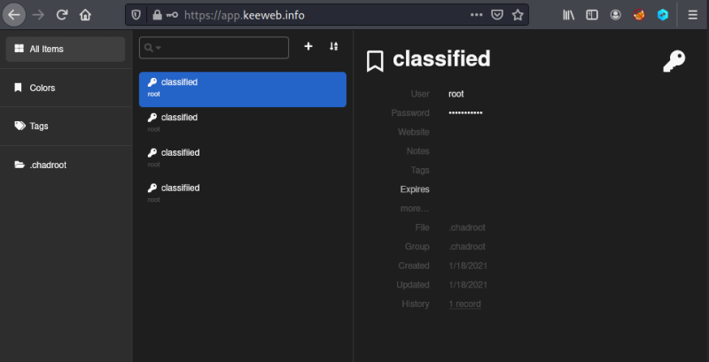

5.1 Keeweb
KeeWeb is a free and open-source password manager compatible with KeePass, available as a web version and desktop apps. The underlying file format is KDBX (KeePass database file).
1. Open in a browser the https://app.keeweb.info/ link.

2. Click on the “Click to open a file” field and choose the “.chadroot.kdbx” file.
1) When you're ask for the password introcude “chatter”.

In this file there are 4 passwords saved. All of them are for the “root” user. If you click on the “Password” field of each one you'll see the password in plain text.
2. Go back to “Reverse Shell” and try all of them.
$su root
Password: “.:.subjective.:.”